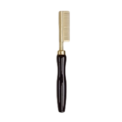
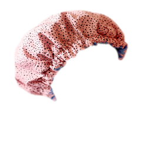
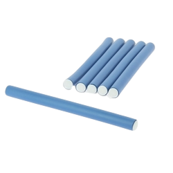

Peigne chauffant
Ce peigne chauffant lisseur manuel de la marque DreamFx permet de lisser vos cheveux de manière naturelle. Ce peigne posséde différents niveaux de températures. La chaleur détend et lisse les boucles et cheveux crépus sans les casser ou les arracher. Elle permet de bien plaquer les perruques full lace pour un rendu plus naturelle. Il est conseillé d'appliquer une huile thermo-protectrice sur toute la chevelure avant utilisation!
20,00 £ TTC

Brosse soufflante
Avec cette brosse soufflante à rotation automatique, offrez vous un brushing professionnel à la maison. Cette brosse posséde différents niveaux de température pour s'adapter à chacun et chacune. La chaleur détend et lisse les boucles et cheveux crépus sans les casser ou les arracher. Il est conseillé d'appliquer une huile thermo-protectrice sur toute la chevelure avant utilisation!
24,50 £ TTC

Bonnet de soins
Ce bonnet permet de faire poser vos masques pour les cheveux. Elle évite l'écoulement du masque sur le visage et augmente la température pour permettre aux soins de bien pénétrer dans le cuir chevelure. Elle est également adapter pour laisser poser une permanente.
11,50 £ TTC

Bigoudis en mousse
Lot de 6 bigoudis bleu en mousse pour permanente. Définir des boucles n'a jamais été aussi facile, enroulez vos cheveux autour des bigoudis et tordez les bidougis pour sécuriser. Laisser posez pendant 1 heure avant de retirer les bigoudis.
- Dimensions : 14 mm de diamètre x 18 cm de long -
9,99 £ TTC